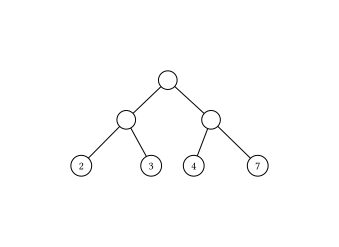
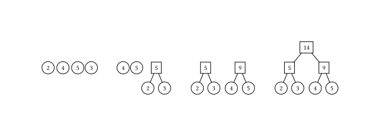
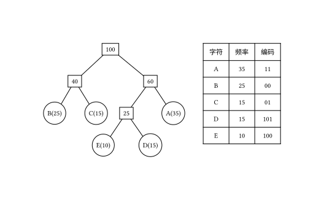

Huffman tree
树的带权路径长度
设二叉树具有 $n$ 个带权叶结点，从根结点到各叶结点的路径长度与相应叶节点权值的乘积之和称为 树的带权路径长度（Weighted Path Length of Tree，WPL）．
设 $w_i$ 为二叉树第 $i$ 个叶结点的权值，$l_i$ 为从根结点到第 $i$ 个叶结点的路径长度，则 WPL 计算公式如下：
$$ WPL=\sum_{i=1}^nw_il_i $$

如上图所示，其 WPL 计算过程与结果如下：
$$ WPL=22+32+42+72=4+6+8+14=32 $$
结构
对于给定一组具有确定权值的叶结点，可以构造出不同的二叉树，其中，WPL 最小的二叉树 称为 霍夫曼树（Huffman Tree）．
对于霍夫曼树来说，其叶结点权值越小，离根越远，叶结点权值越大，离根越近，此外其仅有叶结点的度为 $0$，其他结点度均为 $2$．
霍夫曼算法
霍夫曼算法用于构造一棵霍夫曼树，算法步骤如下：
- 初始化：由给定的 $n$ 个权值构造 $n$ 棵只有一个根节点的二叉树，得到一个二叉树集合 $F$．
- 选取与合并：从二叉树集合 $F$ 中选取根节点权值 最小的两棵 二叉树分别作为左右子树构造一棵新的二叉树，这棵新二叉树的根节点的权值为其左、右子树根结点的权值和．
- 删除与加入：从 $F$ 中删除作为左、右子树的两棵二叉树，并将新建立的二叉树加入到 $F$ 中．
- 重复 2、3 步，当集合中只剩下一棵二叉树时，这棵二叉树就是霍夫曼树．

正确性证明
???+ note "引理" 最优前缀编码树（Huffman 树）中的权值最小的两个叶结点总是最深的叶结点，并且将这两个结点调整为兄弟结点至少不会破坏编码树的最优性．
??? note "证明" 我们采用反证法来证明该命题．假设在一棵最优前缀编码树中，存在两个权值最小的叶结点，它们不是最深的叶结点．设这两个结点为 $a$ 和 $b$，且它们的深度小于某个最深的叶结点．对于这个最深的叶结点 $c$，我们可以将 $a$ 和 $c$ 交换位置，或将 $b$ 和 $c$ 交换位置．由于 Huffman 算法保证树的每一层按权值最小的叶结点合并，因此在交换后，树的带权路径长度（WPL）将减少．由此矛盾可得出假设不成立，因此权值最小的两个叶结点必须是最深的叶结点．
接下来，假设这两个权值最小的叶结点分别为 $a$ 和 $b$，它们的深度相同．如果在一棵最优前缀编码树中这两个结点不是兄弟结点，假设存在其他结点 $c$ 和 $d$ 与 $a$ 和 $b$ 分别是兄弟结点（假设 $a$ 和 $c$ 是兄弟结点，$b$ 和 $d$ 是兄弟结点）．我们可以将 $a$ 和 $b$ 合并为一个子树．
- 如果 $a$ 和 $b$ 合并后的权值之和小于 $c$ 或 $d$ 的权值，那么我们可以将合并后的子树与权值较大的结点（如 $c$ 或 $d$）合并，形成新的子树，WPL 会减少．
- 如果 $a$ 和 $b$ 的权值之和不小于 $c$ 和 $d$ 的权值，我们可以直接将 $a$ 和 $b$ 调整为兄弟结点，$c$ 和 $d$ 作为另一个兄弟结点，WPL 不会增加．
因此，经过这样的调整，最优性不会被破坏，得证．
???+ note "定理" Huffman 算法得到的前缀编码树是最优前缀编码树．
??? note "证明" 我们使用数学归纳法来证明该定理．
- **基本情况**: 当字母数 $n = 2$ 时，显然，直接将两个字母合并成一棵树即为最优编码树．
- **归纳假设**: 假设对于字母数 $n = k$（$k \geq 2$）时，Huffman 算法能够得到最优前缀编码树．
- **归纳步骤**: 对于字母数 $n = k + 1$，我们从 $k+1$ 个字母中选出两个权值最小的字母，将它们合并为一棵子树，子树的根作为虚拟字母（虚拟结点）．根据引理可知，这一操作不会破坏前缀编码树的最优性．此时，虚拟字母与剩下的 $k$ 个字母一同构成 $k + 1$ 个字母，根据归纳假设，当字母数为 $k$ 时，Huffman 算法能够得到最优前缀编码树．
因此，通过数学归纳法，Huffman 算法对于任意字母数 $n$ 都能够得到最优前缀编码树，得证．
霍夫曼编码
在进行程序设计时，通常给每一个字符标记一个单独的代码来表示一组字符，即 编码．
在进行二进制编码时，假设所有的代码都等长，那么表示 $n$ 个不同的字符需要 $\left \lceil \log_2 n \right \rceil$ 位，称为 等长编码．
如果每个字符的 使用频率相等，那么等长编码无疑是空间效率最高的编码方法，而如果字符出现的频率不同，则可以让频率高的字符采用尽可能短的编码，频率低的字符采用尽可能长的编码，来构造出一种 不等长编码，从而获得更好的空间效率．
在设计不等长编码时，要考虑解码的唯一性，如果一组编码中任一编码都不是其他任何一个编码的前缀，那么称这组编码为 前缀编码，其保证了编码被解码时的唯一性．
霍夫曼树可用于构造 最短的前缀编码，即 霍夫曼编码（Huffman Code），其构造步骤如下：
- 设需要编码的字符集为：$d_1,d_2,\dots,d_n$，他们在字符串中出现的频率为：$w_1,w_2,\dots,w_n$．
- 以 $d_1,d_2,\dots,d_n$ 作为叶结点，$w_1,w_2,\dots,w_n$ 作为叶结点的权值，构造一棵霍夫曼树．
- 规定霍夫曼编码树的左分支代表 $0$，右分支代表 $1$，则从根结点到每个叶结点所经过的路径组成的 $0$、$1$ 序列即为该叶结点对应字符的编码．

示例代码
??? note "霍夫曼树的构建" ```cpp struct HNode { int weight; HNode lchild, rchild; };
using Htree = HNode *;
Htree createHuffmanTree(int arr[], int n) {
Htree forest[N];
Htree root = NULL;
for (int i = 0; i < n; i++) { // 将所有点存入森林
Htree temp;
temp = (Htree)malloc(sizeof(HNode));
temp->weight = arr[i];
temp->lchild = temp->rchild = NULL;
forest[i] = temp;
}
for (int i = 1; i < n; i++) { // n-1 次循环建霍夫曼树
int minn = -1, minnSub; // minn 为最小值树根下标，minnsub 为次小值树根下标
for (int j = 0; j < n; j++) {
if (forest[j] != NULL && minn == -1) {
minn = j;
continue;
}
if (forest[j] != NULL) {
minnSub = j;
break;
}
}
for (int j = minnSub; j < n; j++) { // 根据 minn 与 minnSub 赋值
if (forest[j] != NULL) {
if (forest[j]->weight < forest[minn]->weight) {
minnSub = minn;
minn = j;
} else if (forest[j]->weight < forest[minnSub]->weight) {
minnSub = j;
}
}
}
// 建新树
root = (Htree)malloc(sizeof(HNode));
root->weight = forest[minn]->weight + forest[minnSub]->weight;
root->lchild = forest[minn];
root->rchild = forest[minnSub];
forest[minn] = root; // 指向新树的指针赋给 minn 位置
forest[minnSub] = NULL; // minnSub 位置为空
}
return root;
}
```
??? note "计算构成霍夫曼树的 WPL" ```cpp struct HNode { int weight; HNode lchild, rchild; };
using Htree = HNode *;
int getWPL(Htree root, int len) { // 递归实现，对于已经建好的霍夫曼树，求 WPL
if (root == NULL)
return 0;
else {
if (root->lchild == NULL && root->rchild == NULL) // 叶节点
return root->weight * len;
else {
int left = getWPL(root->lchild, len + 1);
int right = getWPL(root->rchild, len + 1);
return left + right;
}
}
}
```
??? note "对于未建好的霍夫曼树，直接求其 WPL"
```cpp
int getWPL(int arr[], int n) { // 对于未建好的霍夫曼树，直接求其 WPL
priority_queue
int res = 0;
for (int i = 0; i < n - 1; i++) {
int x = huffman.top();
huffman.pop();
int y = huffman.top();
huffman.pop();
int temp = x + y;
res += temp;
huffman.push(temp);
}
return res;
}
```
??? note "对于给定序列，计算霍夫曼编码" ```cpp struct HNode { int weight; HNode lchild, rchild; };
using Htree = HNode *;
void huffmanCoding(Htree root, int len, int arr[]) { // 计算霍夫曼编码
if (root != NULL) {
if (root->lchild == NULL && root->rchild == NULL) {
printf("结点为 %d 的字符的编码为: ", root->weight);
for (int i = 0; i < len; i++) printf("%d", arr[i]);
printf("\n");
} else {
arr[len] = 0;
huffmanCoding(root->lchild, len + 1, arr);
arr[len] = 1;
huffmanCoding(root->rchild, len + 1, arr);
}
}
}
```